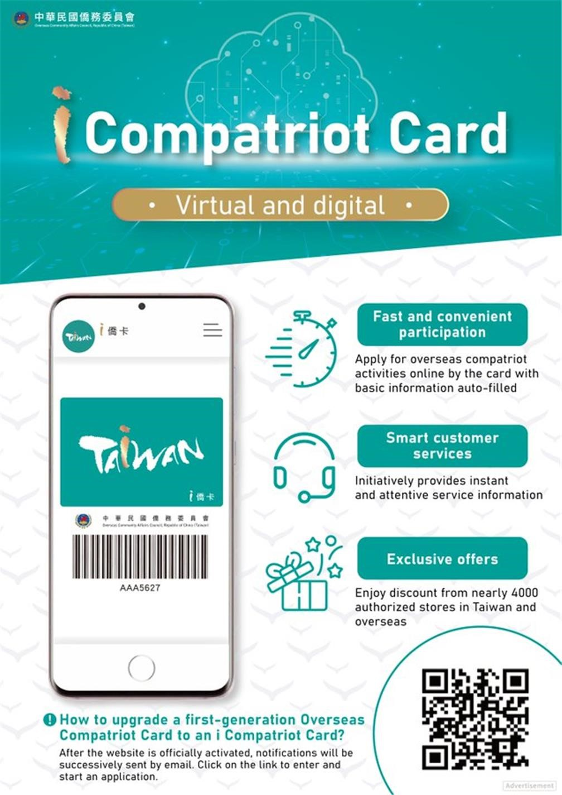

機場接送
請於5月10日前至海外志工報到調查表(https://forms.gle/jHoaFoba1BuV9Vws9)中事先填覆告知。
抵達臺灣
- 我們機場接送的時間為臺灣時間7月4日(星期六)上午9點(09:00)至下午5點(17:00)，謝謝。若有其它時段請於調查表單中填覆並告知，以利承辦單位安排。
- 聯絡人：嚕啦啦旅行社 陳秀春 小姐(手機：0937-071035)
- 欲至機場報到者，請於調查表內提供已確認之抵臺班機時刻，由承辦單位(嚕啦啦旅行社)派車接送；將視志工航班抵達情形安排接駁車班，非隨到隨接駁。
- 接機人員將持明顯手舉牌利於辨識
自行報到
- 報到地點：臺北醫學大學(信義校區) 臺北市信義區吳興街250號
- 報到時間：7月4日(星期六) 14:00-18:00
- 聯絡人：嚕啦啦旅行社 陳林淳 先生 / 手機：0935-261165
- 親友自行接送至臺北醫學大學(信義校區)者，請攜個人必須物品及行李於上述報到時間內前往報到。報到時請出示護照等文件，報到後以團體活動為主，請勿自行離團活動。
- 延遲報到者：請親友另行向承辦單位連絡。
送機
- 原則安排於7月31日(星期五)送機，但自7月30日(星期四)成果發表會(劍潭海外青年活動中心-111臺北市士林區中山北路四段16號)結束後，自下午(14:00)起即可離營，完成離營程序後將由承辦單位(嚕啦啦旅行社)派車接送至桃園機場。
- 7月30日(星期四)離營者，當日接駁時段為14:00-17:00，建議購買7月30日當天19:00-22:00之間航班為宜。
- 7月31日(星期五)離營者，當日接駁時段為08:00-12:00，建議購買7月31日13:00後航班。
- 在臺親屬接送地點：劍潭海外青年活動中心(111臺北市士林區中山北路四段16號)。
如有其他需求請事前告知，以利承辦單位聯絡安排。
飲食習慣相關問題
- 在教育訓練週(7月4日至10日)期間，主要安排於臺北醫學大學信義校區內(餐盒或簡易自助式餐點)用餐，如有對特定食材過敏或特殊飲食(如豬肉、雞肉等)需求敬請提前告知，我們將提供素食與葷食兩種選擇另外安排。
- 在校服務週(7月11至24日)飲食由服務學校統一安排。
- 在寶島參訪週(7月25至29日)飲食安排將會在旅遊行程中安排在地特色美食(特殊飲食另外安排)。
- 活動自7月4日報到當天晚餐起至7月31日結束午餐止，期間我們將提供每日三餐(在校服務週亦會由學校師長安排)。
服裝及洗衣
- 本活動將提供每位志工3件團體制服（上衣），並於 7月4日報到時，依據志工於調查表單中填寫之尺寸發放。建議選擇較平常大一號之尺寸，以利穿著舒適。請務必詳實填寫尺寸；如尺寸不合，僅能於全體志工完成報到後，視情況與其他志工交換。
- 本活動期間自7月4日至7月31日止，共計28天。因營期較長，且第一週教育訓練結束後及第四週寶島參訪期間，志工皆需自行搬運行李，建議勿攜帶過多物品，以準備4至5套換洗衣物為宜。
- 第一週教育訓練期間6天，志工均須穿著團體制服及長褲；第二、三週到校服務期間，請依服務學校規定穿著。依往年經驗，到校服務期間多數時段亦須穿著團體制服。第四週寶島參訪期間，將開放3天可穿著個人便服，日期將另行提前通知，當日可穿著短褲；其餘時段仍請配合穿著長褲。
- 臺灣夏季戶外較易有蚊蟲，尤其具過敏體質之志工，建議準備薄長袖衣物，以減少蚊蟲叮咬。
- 住宿於臺北醫學大學宿舍（拇山學苑）期間，宿舍設有投幣式洗衣機及烘衣機，並提供免費脫水機，惟數量有限。主辦單位將提供每位志工洗衣袋，建議同寢室室友可共同清洗衣物，或自行手洗後脫水晾乾。洗衣房原則上不會關閉，但因志工人數眾多，為避免排隊等候時間過長，建議可於每日晚間就寢前，利用盥洗時間順便清洗衣物。團體制服為吸濕排汗材質，在臺灣夏季氣候下通常容易晾乾。
- 如不方便攜帶洗衣精，臺北醫學大學校內可購買小包裝洗衣精。第二、三週到校服務期間，相關洗衣用品將由服務學校協助準備。
- 主辦單位將提供每位志工4個衣架，亦建議可自行攜帶2至3個衣架備用。
- 教育訓練及到校服務期間，請依規定以穿著長褲為主，例如薄長褲或運動長褲；短褲、緊身牛仔短褲、韻律褲或運動短褲較不適合。
住宿
- 教育訓練週（7月4日至7月10日）住宿安排於臺北醫學大學信義校區宿舍「拇山學苑」（11043 臺北市信義區吳興街284巷22弄92-1號），採四人一室，床位皆為上鋪。報到時將提供每位志工簡易寢具一份（含枕頭、床墊、涼被或睡袋）及盥洗包一份（內含小毛巾、牙膏、牙刷、香皂、梳子及外袋），另備有公用沐浴乳、洗髮精及吹風機。
- 到校服務週（7月11日至7月24日）住宿將由各服務學校安排，住宿形式依各校規劃而有所不同。
- 寶島參訪週（7月25日至7月29日）住宿將安排於飯店或青年活動中心。
- 成果發表會（7月30日至7月31日）住宿安排於劍潭海外青年活動中心（111 臺北市士林區中山北路四段16號）。
- 有關網路漫遊服務，請志工自行於僑居地事先開通或申辦。
- ※為響應環保並兼顧個人衛生，不提供大浴巾及拖鞋，請志工自行攜帶。
交通
- 報到暨教育訓練週（7月4日至7月10日）研習地點位於臺北醫學大學信義校區（110 臺北市信義區吳興街250號）。因校內空間有限，恕不提供停車服務；如有親屬接送志工報到，請改停鄰近之收費停車場。
- 成果發表會暨解散期間（7月30日至7月31日）活動地點位於劍潭海外青年活動中心（111 臺北市士林區中山北路四段16號），場域內設有計時收費停車。
- 本活動除於7月4日及7月30日至7月31日提供接送機交通接駁服務外，其餘交通安排如下：7月10日教育訓練結束後，志工將分發至各服務學校，由各校協助安排前往交通；北部地區學校多以專車接送，中南部地區則多採同縣市學校共乘巴士或搭乘臺鐵、高鐵等方式前往。7月25日由服務學校協助將志工接送至寶島參訪各集合地點，再統一搭乘大型遊覽車進行參訪行程。
臺灣天氣預報
資料來源：中央氣象署
僑民役男
- 僑民役男定義：年滿19歲~36歲之間，並同時持有中華民國(臺灣)護照與僑居國護照，以及在中華民國(臺灣)持有戶籍的男性。(簡單判定根據：請確認您的中華民國(臺灣)護照上是否有「身分證字號」欄位，若有，即代表您持有臺灣戶籍。)
- 若您持有僑民役男身分，請使用中華民國(臺灣)護照入境與出境。(由於中華電信提供的海外青年網路專案須使用僑居國護照出入境，因此僑民役男不適用該網路專案)
-
若您本次入境前未申請過出境許可與出境核准，出境前須重新申請：
-
向僑委會申請役政用華僑身分證明書
- 需填寫華僑身分證明申請書，若委託他人申請，則須加填委託書(委託人兩份都需親自簽名)
- 備妥中華民國與居留國護照(不能用影本)，申請一次須工本費$200元新台幣
- 至僑委會臨櫃申請(行政院中央聯合辦公大樓南棟(台北市中正區徐州路5號)3F)，等待半天至一天工作日即可領取。
-
至內政部移民署僑民役男申請出境文件審查平臺申請出境許可
- 審查平臺連結
- 登入需填寫役男身份證字號、出生日期及中華民國(臺灣)護照號碼
-
登入後選擇新增申請並填寫必要資訊：
- 僑民役男姓名
- 僑民役男E-Mail(需填寫兩次，一次為確認)
- 僑民役男役政用華僑身分證明書(除須上傳可清楚辨識的照片外，亦須填寫有效期限)
- 僑民役男中華民國護照及僑居國護照(除填寫編號外，亦須上傳可清楚辨識照片及填寫有效期限)
- 僑民役男4個月內自僑居國出國的紀錄(最佳證明為自僑居地起飛的機票，且機票資訊必須要能清楚確認是僑民本人持有)
- 申請後等待約一至兩個工作天後，可再次登入查詢申請結果(連絡電話：內政部役政司，02-85013928)
- 若僑民役男尚未建立兵籍資料，則需親自(視情況須由監護人陪伴)前往戶籍所在地戶政事務所辦理，完成後才能獲得出境許可
-
至內政部移民署各地服務站臨櫃申請出境核准
- 須至服務站填寫申請書，若委託他人代理則須加填委任書(皆須本人親自簽名)，委任書須貼上委辦者身分證正反面影本(須自行影印)
- 申請時須攜帶僑民役男中華民國(臺灣)護照、僑居國護照及役政用華僑身分證明書，且必須自行影印身分證明頁與役政用華僑身分證明書
- 僑民役男在通過出境核准後，會在中華民國(臺灣)護照上蓋出境核准證明印，於有效期限內可自由出入境中華民國自由地區(臺灣地區)。
- 若出境核准證明過期，但役政用華僑身分證明書尚未過期，則可逕自內政部移民署各地服務站重新臨櫃申請出境核准。
-
向僑委會申請役政用華僑身分證明書
- 承辦單位可協助辦理申請，但請於活動開始前向承辦單位提出需求，活動正式開始後概不受理。
- 詳情可參考此流程圖：[連結]
i僑卡

更多資訊請參閱性別平等政策宣導
其他問題
- 有關航班及生活事項調查表
- 如怕護照證件遺失，可事先用手機拍照存檔或是影印紙本，萬一需要就醫時可以使用影本或臺灣健保卡，但如需辦理網卡(如有家長陪同可以辦完網卡後由家長收回)
- 除非需要大量購買臺灣名產，否則零用錢建議攜帶新臺幣1,000-2,000元即可，或是悠遊卡儲值1,000元，現金1,000元亦可。
-
因為報到後的晚上有些注意事項還要跟志工們說明，原則上不希望志工報到後離開臺北醫學大學，報到後我們有責任維護每位志工和工作人員的安全。
- 其實我們並不是要限制志工的行動或說是"管制"志工，畢竟志工來臺灣人生地不熟，加上我們有責任維護參加這個活動的每個人的安全，雖然臺灣的治安算很好，但不怕一萬只怕萬一，所以麻煩各位家長，協助主辦單位(僑務委員會)跟志工們說明，營隊期間的規則和要求都是為了活動順利和大家的安全，沒有工作人員帶領下請勿私自離開營隊活動區域，也切勿飲酒，就算年滿18歲也一樣(因為團體內還有很多未滿17歲的志工，擔心會有渲染效應...難以管理)，志工來臺是為了服務...為了增加生活經驗和學習，希望各位家長和志工能夠諒解，謝謝。
- 有關個人手機網路通訊部分，請於僑居國或抵達臺灣機場後自行申辦。